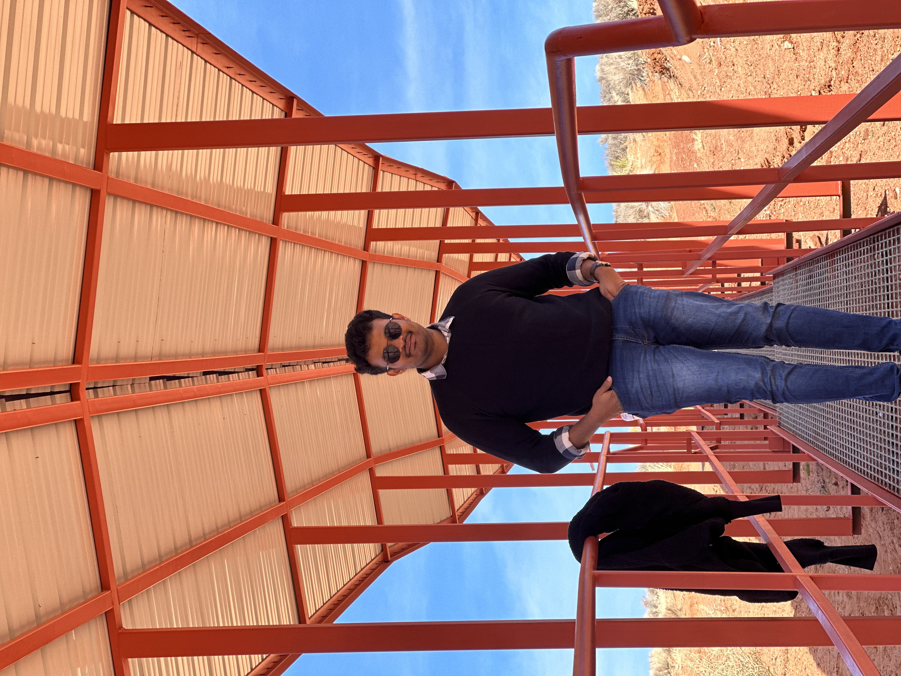
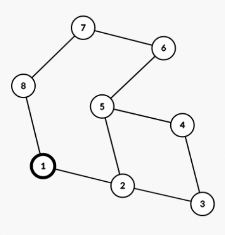
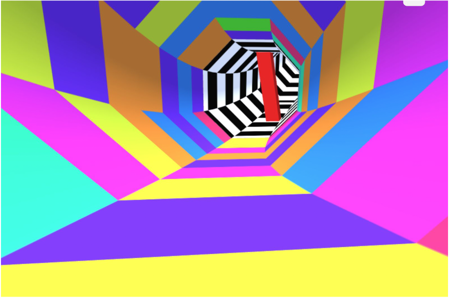

|
I am currently a masters student in the CSE Department at ASU since Fall' 22.
I have completed my undergraduate degree in Computer Science from IIIT-Hyderabad in 2020, with honors in Computer Vision, advised by Prof. CV Jawahar
I have 2 years of experience working as a software engineer at Mirelz, where I have worked as a Computer Vision Engineer for rapidly experimenting with new ideas under Mirelz Research.
I have experience in a variety of programming languages and frameworks.
- Programming Languages: Java, C++, Python, C, HTML, CSS, Javascript, TypeScript, Go
- Libraries and Tools: AWS, Django, React, Pytorch, Tensorflow
- Relevant courses: Computer Programming, Data structures, Algorithms, Software Engineering, Operating Systems, Computer Networks, Computer Vision, Database systems, Distributed Systems, Optimization Methods,
Artificial Intelligence, Machine Learning
I am currently looking for fall 2023 SWE/SDE roles, so if you have a position available or just want to say hi, you can always mail me.
CV /
Github /
LinkedIn
|

|
|
|
Mirelz
Software Engineer
Hyderabad, India · July 2020 - Aug 2022
Worked as a backend engineer for rapidly experimenting with new business ideas under Indeed Research.
Developed and maintained an edge detection library which improves the placement of 3d models of ornaments (rings, earrings, bracelets, glasses) onto the image/live video of a user (Virtual Try-on), with the help of various image processing techniques that. Skills: Software Development, API platform, Image Processing, Python, Opencv.
Created and developed a 3D virtual placement feature in virtual try-on of jewelry, using which the user can see the 3D placement of the jewelry in virtual tryon. Skills: 3D geometry, three.js.
Improved the TryOn FPS by 65% by developing a generic face/hand tracker library which helps reduce the usage of the time-intensive ML-based face/hand detection on every frame. Skills: Opencv, Typescript, Scalable services
Developed a feature which can predicts and automatically adjust the true jewelry size for different users based on Iris/ credit card. Leveraged knowledge in Image Processing, Typescript, Tensorflow.js, OpenCV.js, Three.js and React.
Coached and mentored 2 engineers on the team.
Technologies: TypeScript, Javascript, Threejs, Opencv, TFJS, Image Processing.
|
|
|
|
Intel
Software Engineer/ Machine Learning Intern
Bangalore, India · June 2019 - Aug 2019
Automated the shards generation process used in the Employee review system by posing it as an optimization problem. This improved the response time of the existing interview scheduling planner from 10sec to < 1sec.
Prototyped a web app to allow users to add new constraints in the shard generation process.
Technologies: Python, C, C++, Shell
|
|

|
IIIT Hyderabad
Undergraduate Researcher . Teaching Assistant
Hyderabad, India · Aug 2018 - July 2020
Full-time honors student at CVIT (Vision) lab under CV Jawahar.
Prepare a baseline for Pixel-Level semantic segmentation task for IDD Segmentation dataset. Skills: Pytorch, Python (Project Page)
Lecture Analyzer: Developed a system which summarizes a video lecture or a meeting using Alexa and created a website in which the summary gets updated after every meeting. Skills: Python, text-speech, AWS Lambda, Alexa.(Project Page)
Worked on AI assistant bot which can be used for assistance in the lab. Developed an interface (a mobile app using react native) for the interaction of user with the bot. Skills: ROS1, react-native, ReactJS.
Teaching assistant for Statistical Methods in AI (Fall 19) courses.
Technologies: Python, Pytorch, Tensorflow
|
|

|
Arizona State University
Masters in Computer Science
Tempe, AZ · 2022 - Present
|
|
|
|
IIIT Hyderabad
B.Tech in Computer Science & Engineering ·
Hyderabad, India · 2016 - 2020
|
|

|
Human Parsing with Contextualized Convolutional Neural Network
Implemented the task of human parsing using Deep Learning, by combining four types of contextual information from the image into a unified deep CNN, utilizing Pytorch. Achieved an average accuracy of 74% across 18 categorical output labels. Created a detailed analysis of various model training and performance metrics using Tensorboard.
Technologies: Python, Pytorch
Project Summary: link
Github: link
|
|

|
Ultimate tic-tac-toe
Developed a bot using alpha beta heuristic search and minimax algorithm to play tic-tac-toe against other bots or human in a 16 X 16 grid.
Technologies: Python
Github: link
|
|
|

|
Breadth-first search in distributed environment
Implemented a breadth-first search in distributed environment using algorithms such as sequential search, parallel search using message passing, 1D partitioning and 2D partitioning techniques. Provided a detailed analysis on each of the algorithms considering different metrics such as time complexity, message space complexity etc.
Technologies: Erlang, Python
Project summary: link
Github: link
|
|

|
Proxy Server
Implemented a multi-threaded proxy server which servers multiple requests from users using TCP/UDP protocols for file transfer with LRU (least recently used) caching for faster file transfer.
Technologies: Python
Github: link
|
|

|
Mini Linux Shell
Developed a user-interactive Unix shell in C using syscalls to implement command parsing and execution,piping, input and output redirection, managing background processes, signal handling.
Technologies: C++
|
|
|

|
Computer Graphics Game development Projects
Developed games similar to Mario (2D), Legend of Zelda (3D) and Tunnel Rush (3D) using OpenGL (C++) and WebGL (Javascript). Incorporated particle effects, projectile physics and collider mechanics in the games developed.
Technologies: C++
Github: Tunnel-Rush, 2D-Game-Pac-Man-Killer, 3D-Game-Legend-of-Zelda
|
|

|
Multi-class face images classification
Developed algorithms for multi-label classification of face images using dimensionality reduction by performing Principle component analysis. Used ML algorithms such as Naive Bayes and Linear classifier for multi-class classification tasks.
Technologies: Python
|
|
Thanks to Jon Barron for the nice template!
|